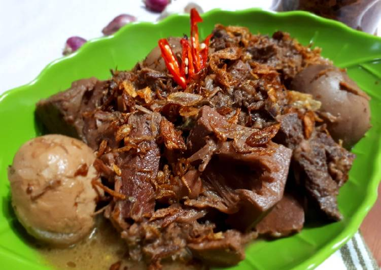
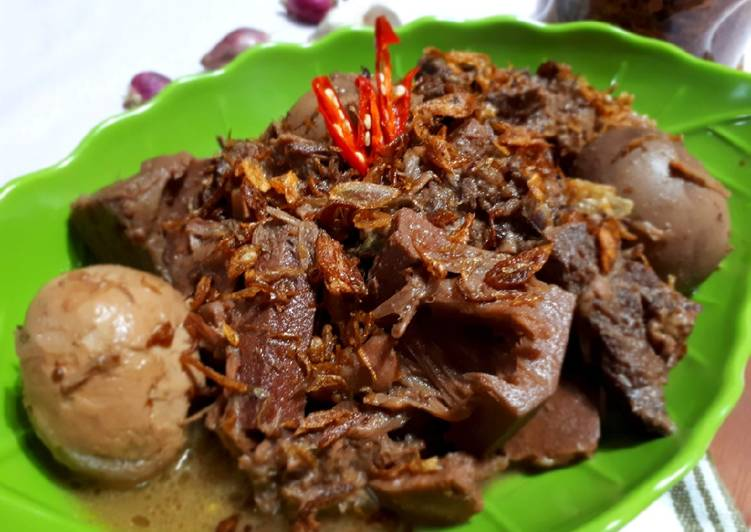

Gudeg Khas Yogya
Gudeg adalah masakan khas Yogyakarta yang terbuat dari nangka muda yang dimasak dalam santan dan aneka rempah hingga empuk dan meresap. Hidangan ini memiliki rasa manis yang khas, dengan warna cokelat yang didapat dari daun jati yang dimasak bersama nangka. Proses memasak gudeg memakan waktu lama, sehingga bumbunya benar-benar meresap, menciptakan tekstur lembut pada nangka. Gudeg biasanya disajikan dengan nasi, telur pindang, ayam kampung, tahu atau tempe bacem, serta sambal krecek yang pedas, memberikan keseimbangan rasa manis dan pedas.
Gudeg memiliki dua varian utama: Gudeg Basah, yang lebih berkuah, dan Gudeg Kering, yang lebih awet karena kadar airnya lebih sedikit. Sebagai ikon kuliner Yogyakarta, gudeg sering disebut sebagai "Makanan Rakyat Yogya" dan menjadi simbol kekayaan budaya Jawa. Hidangan ini telah mendunia, dikenal dan disukai oleh masyarakat lokal maupun wisatawan mancanegara.
 
